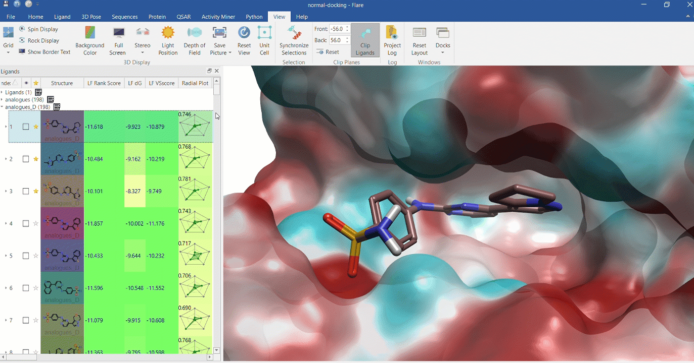

Docking of Compounds on Dihydrofolate Reductase (DHFR)

In this project, I focused on docking various compounds onto Dihydrofolate Reductase (DHFR), a key enzyme involved in cell growth and replication. The objective was to explore the binding affinities of different compounds, including **trimethoprim**, a well-known DHFR inhibitor, and other test compounds. Using **ChemBioDraw**, I designed and prepared these compounds and docked them at the active site of DHFR where the natural ligand binds. A significant aspect of this project was learning how to prepare the docking grid, ensuring it was accurately set up to target the enzyme's active site. I carried out the docking process using **Flaire docking software**, which was provided by Dr. Mariam Degani during a medicinal chemistry class.
Through this project, I gained valuable experience in operating **Flaire** and became proficient in its features, including setting up docking grids, visualizing ligand alignment, and calculating **Gibbs free energy** values for binding interactions. The Gibbs free energy results allowed me to compare the binding strengths of the various compounds, with lower energy values indicating stronger interactions. **Trimethoprim** demonstrated a strong binding affinity, as expected, while other compounds exhibited varying degrees of binding strength. This project not only enhanced my understanding of the docking process and protein-ligand interactions but also provided insight into how computational tools like Flaire can be used for drug discovery and molecular simulations in medicinal chemistry.